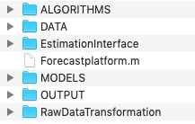

Installation and software requirements
The Platform is contained in a zip file called MMB_estimation.zip which you may download and save to your computer. In order to use the platform, you need to extract the zip file to retrieve the folder MMB_estimation. This folder contains the Matlab m-file Forecastplatform.m and a set of subfolders relating to the models, to the data, and to output. The next figure demonstrates the structure of the platform, which includes the following subfolders:

Algorithmscontains the numerical methods that will be used in model estimation;DataandRawDataTransformationcontains the actual macroeconomic data for the U.S. economy, and the files for processing the raw data;EstimationInterfaceincludes Matlab files related to the usage of the platform;Modelscontains one specific folder each model included in the platform, where the corresponding Dynare mod-files are saved;Outputstores the results from the desired exercise, which are saved in Excel spreadsheets or as images in PNG-format.
The program is written in Matlab, and it requires Matlab version 2017a or higher to run the platform.
The program utilizes Dynare, which is a Matlab toolkit for handling DSGE models, for solving and estimating models. The Platform requires Dynare version 4.3.3 or higher, which can be freely downloaded from its official website. Please makre sure that add the Dynare path has been added to Matlab before running the platform.
Note
For questions about Matlab please visit https://www.mathworks.com
For questions about Dynare, especially on how to install Dynare and set up the Dynare environment in Matlab, please visit https://www.dynare.org